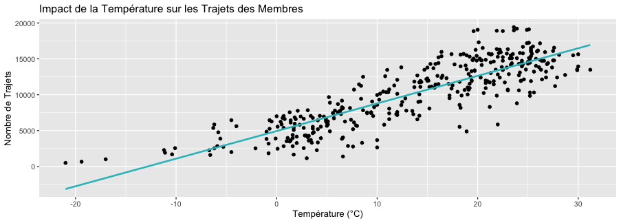

BELLABEAT CASE STUDY
SCENARIO
As a junior data analyst, I'm recently working for a company named Bellabeat. Bellabeat is an high-tech manufacturer of health-focused smart devices for women founded in 2013 by Urška Sršen & Sando Mur. Here are some examples of bellabeat products :
Bellabeat app : The Bellabeat app provides users with health data related to their activity, sleep, stress,menstrual cycle, and mindfulness habits. This data can help users better understand their current habits and make healthy decisions. The Bellabeat app connects to their line of sma wellness products.
Leaf Bellabeat’s classic wellness tracker can be worn as a bracelet, necklace, or clip. The Leaf tracker connects to the Bellabeat app to track activity, sleep, and stress.
Time: This wellness watch combines the timeless look of a classic timepiece with sma technology to track user activity, sleep, and stress. The Time watch connects to the Bellabeat app to provide you with insights into your daily wellness.
Spring: This is a water bottle that tracks daily water intake using sma technology to ensure that you are appropriately hydrated throughout the day. The Spring bole connects to the Bellabeat app to track your hydration levels.
Bellabeat membershipBellabeat also offers a subscription-based membership program for users. Membership gives users 24/7 access to fully personalized guidance on nutrition, activity, sleep, health and beauty, and mindfulness based on their lifestyle and goals.
BUSINESS TASK
To better understand their customer needs and the smart devices market, Urška Sršen asked me to conduct an analysis. We want to identify the trends in smart device usage, see how these trends can apply to Bellabeat customers and help Bellabeat build a data driven marketing strategy. I'll have a week to conduct the analysis and share it with the Bella beat marketing analytics team. But I'll force myself to do it in 3 days without having to lower the quality of my study just to see how I would react to tight deadlines.
ASK
To define what kind of trend we want to identify in smart devices usage, we will try to answer a few questions :
Do users always wear their device ? and if not when do they remove it ? What is the percentage of users that always wear their device ?
What motivates users to wear smart devices ? Sport ? Biometrics tracking ? Are there users that do sport without going into the app ?
What are the days of the week in which users use the app the most ?
What are the Sleep, Weight, Intensities of activities and calories burning trends among users
What is the percentage of users that use Weight monitoring and why ?
What are the customers "types”
Id love to ask more question to Urška on the data she provided me to clarify some points. In a real life situation I would reach out to my supervisors to be sure I'm heading the good way with my analysis.
GET THE DATA READY
In the case study, a Kaggle Dataset is provided containing data from 2016 on 30 random Fitbit Users. First, we will perform The ROCC test to see if we can trust the dataset :
Dataset is RELIABLE : LOW In this case the dataset is not really representative of the population, 30 people can't really represent all the customers of a global company like bellabeat.
Dataset is ORIGINAL : MEDIUM The dataset is provided by MOBIUS which seems to be a trustworthy source on Kaggle as he is a steady and respected contributor (Lots of medals and considered a Dataset Master). But it is still third party data.
Dataset is COMPLETE & UNDERSTANDABLE : LOW Dataset misses a lot of information. Lots of information is missing, in the “Daily_Activity” there are missing records for a lot of customers. We would also need gender info as Bellabeat is a women-oriented company. Data is not well explained as there is no metadata. We do our best to make assumptions on data.
Dataset is CURRENT : LOW Dataset is not current as it is 10 years old now, smart devices users might have changed their habits.
Dataset CITED : LOW Dataset comes from a distributed survey via Amazon Mechanical Turk, so yes it is cited but not from a very reliable source
RELIABILITY issue : The dataset provided is already huge, there are approximately 2 millions observations by table and there are 7 tables by period for 2 periods of time. For technical reasons it will be difficult to deal with a bigger dataset on my personal laptop . As it is a Case study we will perform the analysis on this sample size but the recommendations i’ll do couldn't really apply in a real life scenario.
Source is not really UNDERSTANDABLE: I'll try to make assumptions on the data.
Source is OUTDATED : As it is a Case study we will still perform the analysis on this outdated data but the recommendations i’ll do couldn't really apply in a real life scenario.
Fitness data about users seems to be really hard to find as there might be some confidentiality issues in sharing it publicly. I searched BigQuery public datasets and fitabase to find better data and couldn't find it for free. As this case study is provided by google (a trustworthy source) and that i can't just “give up”, i'll take this case study as a challenge to make sense out of this dataset by making assumptions on the data. It can also be seen as an opportunity to do an analysis on Data inconsistency and explain why this dataset is a really bad one which should never be used to make data driven decisions.
The Kaggle dataset is organized in 2 folders containing the same type of tables for 2 months in 2016 (march and april).
We have 3 types of data :
The data that is continuously recorded by the device, there is data as long as the user is wearing the device. We have different types of metrics (Calories, Sleep, MET, Intensity, Steps)
There are different files for the same metrics (minutes, hour and day) . I'll import just the metrics by minutes for Calories Sleep and Intensity.
- Calories : Calories burnt by minute. (continuous entire number)
- Intensity : Intensity of the activity made by the user by minute. (0,1,2,3)
- Sleep : There is a record if the user is asleep (1,2 or 3 for the recovering quality of sleep)
We have the same tables for April and March
The user logs into the app to record activity himself, he asks for a report on this day or he just opens the app which automatically generates a record for the day. There is just one table by month called DailyActivity (by day).
-
The user enters the data himself on the app. Also one table by month called WeightLogInfo. (We will discuss this point later on the analysis part)
I came up with this classification because we have way more data in the table "Continuous_record" than “DailyActivity”. WeightLogInfo is the one with the least data (maybe because it requires more effort from the user). A table called SleepDay is also available only for the month of april. We use the table to know how many people track their sleep on the total population.
DATA CHOICE EXPLANATION
- Calories : if there is a record the user was wearing the watch.
- Intensity : To see if there is some sport activity untracked by the app.
- Sleep : there is data only if the user is asleep so we can track sleeping habits of users and maybe link it to other habits they have.
PROCESS
We will use BigQuery and Tableau to perform this analysis.
As I was trying to import data to BigQuery I noticed there was some invalid format in the dates. I tried to automatise the cleaning on Google Sheets but couldn't manage to switch AM/PM hours to 24h based timestamp. I tried to clean it on RStudio and finally succeeded in setting the appropriate timestamp for my data. Here is the process :
## Charger les bibliothèques nécessaires
library(dplyr)
library(lubridate)
## Charger les données
data <- read.csv("/Users/msayn47painter/Desktop/CASE_STUDY_Bellabeat
/Bellabeat_data/April_data
/Fitabase Data 4.12.16-5.12.16/weightLogInfo_merged.csv")
## Vérifier que la colonne est bien en texte
data$Date <- as.character(data$Date)
## Convertir les dates en format Date-Time avec heure en 24h
data$Date <- mdy_hms(data$Date)
## Forcer l'affichage des heures, même pour minuit (00:00:00)
data$Date <- strftime(data$Date, format="%Y-%m-%d %H:%M:%S")
## Sauvegarder le fichier nettoyé en CSV
write.csv(data, "/Users/msayn47painter/Desktop/CASE_STUDY_Bellabeat/Bellabeat_data/April_data
/CleanedData_april/WeightLogInfo_april.csv", row.names = FALSE, quote = FALSE)
I did the same operation for all tables.
Now we have to organize the data to better understand it and clean it. First I'll group these 3 tables (Sleep, Intensity and Calories) in one with the following columns
As it is more complete, We'll use the data by minutes tables and use it to create a table by hours: Continuous_record (minutes) and Continuous_hours
-- march
CREATE TABLE `nimble-mode-447321-p1.bellabeat.Continuous_record_march` AS
WITH
calories AS (
SELECT
ActivityMinute AS date,
Calories,
id -- Ajout de la colonne id de Calories_march
FROM `nimble-mode-447321-p1.bellabeat.Calories_march`
),
sleep AS (
SELECT
date,
Value
FROM `nimble-mode-447321-p1.bellabeat.Sleep_march`
),
intensities AS (
SELECT
ActivityMinute AS date,
Intensity
FROM `nimble-mode-447321-p1.bellabeat.Intensities_march`
)
SELECT
c.date AS ActivityMinute,
c.id,
MAX(c.Calories) AS Calories,
COALESCE(MAX(s.Value), 0) AS Sleep_Value,
MAX(i.Intensity) AS Intensity
FROM calories c
LEFT JOIN sleep s ON c.date = s.date
LEFT JOIN intensities i ON c.date = i.date
GROUP BY c.date, c.id
-- april
CREATE TABLE `nimble-mode-447321-p1.bellabeat.Continuous_record_april` AS
WITH
calories AS (
SELECT
ActivityMinute AS date,
Calories,
id
FROM `nimble-mode-447321-p1.bellabeat.Calories_april`
),
sleep AS (
SELECT
date,
Value
FROM `nimble-mode-447321-p1.bellabeat.Sleep_april`
),
intensities AS (
SELECT
ActivityMinute AS date,
Intensity
FROM `nimble-mode-447321-p1.bellabeat.Intensities_april`
)
SELECT
c.date AS ActivityMinute,
c.id,
MAX(c.Calories) AS Calories,
COALESCE(MAX(s.Value), 0) AS Sleep_Value,
MAX(i.Intensity) AS Intensity
FROM calories c
LEFT JOIN sleep s ON c.date = s.date
LEFT JOIN intensities i ON c.date = i.date
GROUP BY c.date, c.idWe will also use the table DailyActivity (daily Data)
And the table WeighLogInfo (Daily Data) :
And Finally the table SleepDay :
DATA CLEANING
DATA MERGING :
First it is important to merge the data from both monthes to have all the data in the same table
-- Continuous record
INSERT INTO `nimble-mode-447321-p1.bellabeat.Continuous_record`
(id, ActivityMinute, Calories, Sleep_Value, Intensity)
SELECT id, ActivityMinute, Calories, Sleep_Value, Intensity
FROM `nimble-mode-447321-p1.bellabeat.Continuous_record_april`
UNION ALL
SELECT id, ActivityMinute, Calories, Sleep_Value, Intensity
FROM `nimble-mode-447321-p1.bellabeat.Continuous_record_march`;
-- Dailyactivity
CREATE TABLE `nimble-mode-447321-p1.bellabeat.Dailyactivity` AS
SELECT * FROM `nimble-mode-447321-p1.bellabeat.Dailyactivity_april`
UNION ALL
SELECT * FROM `nimble-mode-447321-p1.bellabeat.Dailyactivity_march`;
-- WeightLogInfo
CREATE TABLE `nimble-mode-447321-p1.bellabeat.WeightLogInfo` AS
SELECT * FROM `nimble-mode-447321-p1.bellabeat.WeightLogInfo_april`
UNION ALL
SELECT * FROM `nimble-mode-447321-p1.bellabeat.WeightLogInfo_march`;Checking FORMATS :
SELECT column_name, data_type
FROM `nimble-mode-447321-p1.bellabeat.INFORMATION_SCHEMA.COLUMNS`
WHERE table_name = 'Continuous_record';
SELECT column_name, data_type
FROM `nimble-mode-447321-p1.bellabeat.INFORMATION_SCHEMA.COLUMNS`
WHERE table_name = 'DailyActivity';
SELECT column_name, data_type
FROM `nimble-mode-447321-p1.bellabeat.INFORMATION_SCHEMA.COLUMNS`
WHERE table_name = 'WeightLogInfo';Continuous_record :
| Column | Format |
| ID | INT64 |
| Activity Minute | TIMESTAMP |
| Calories | FLOAT64 |
| Sleep_Value | INT64 |
| Intensity | INT64 |
DailyActivity :
| Column | Format |
| ID | INT64 |
| Activity Date | DATE |
| TotalSteps | INT64 |
| TotalDistance | FLOAT64 |
| LoggedActivitiesDistance | FLOAT64 |
| VeryActiveDistance | FLOAT64 |
| ModeratelyActiveDistance | FLOAT64 |
| LightActiveDistance | FLOAT64 |
| SedentaryActiveDistance | FLOAT64 |
| VeryActiveMinutes | INT64 |
| LoggedActivitiesDistance | INT64 |
| VeryActiveDistance | INT64 |
| FairlyActiveMinutes | INT64 |
| SedentaryMinutes | INT64 |
| SedentaryActiveDistance | INT64 |
| Calories | INT64 |
WeightLogInfo :
| Column | Format |
| ID | INT64 |
| Date | TIMESTAMP |
| WeightKg | FLOAT64 |
| WeightPounds | FLOAT64 |
| Fat | STRING |
| BMI | FLOAT64 |
| IsManualReport | BOOL |
| LogId | INT64 |
All the tables have a good data format (except "fat" which should be a Int64 but as the colum is empty we'll ignore this format).
Checking for NULL values :
SELECT
COUNT(*) AS total_rows,
COUNTIF(id IS NULL) AS missing_id,
COUNTIF(ActivityMinute IS NULL) AS missing_activity_minute,
COUNTIF(Calories IS NULL) AS missing_calories,
COUNTIF(Sleep_Value IS NULL) AS missing_sleep_value,
COUNTIF(Intensity IS NULL) AS missing_intensity
FROM `nimble-mode-447321-p1.bellabeat.Continuous_record`;
SELECT
COUNT(*) AS total_lignes,
COUNTIF(Id IS NULL) AS id_nulls,
COUNTIF(ActivityHour IS NULL) AS activityhour_nulls,
COUNTIF(Calories IS NULL) AS calories_nulls,
COUNTIF(Sleep_Value IS NULL) AS sleep_value_nulls,
COUNTIF(Intensity IS NULL) AS intensity_nulls
FROM `nimble-mode-447321-p1.bellabeat.Dailyactivity`;
SELECT
COUNT(*) AS total_lignes,
COUNTIF(Id IS NULL) AS id_nulls,
COUNTIF(Date IS NULL) AS date_nulls,
COUNTIF(WeightKg IS NULL) AS weightkg_nulls,
COUNTIF(WeightPounds IS NULL) AS weightpounds_nulls,
COUNTIF(Fat IS NULL) AS fat_nulls,
COUNTIF(BMI IS NULL) AS bmi_nulls,
COUNTIF(IsManualReport IS NULL) AS ismanualreport_nulls,
COUNTIF(LogId IS NULL) AS logid_nulls
FROM `nimble-mode-447321-p1.bellabeat.WeightLogInfo`;
No NULL Values
Checking for ABNORMAL VALUES:
SELECT
COUNT(*) AS total_lignes,
COUNTIF(Calories < 0) AS calories_negatives,
COUNTIF(Sleep_Value NOT IN (0,1,2,3)) AS sleep_value_invalides,
COUNTIF(Intensity NOT IN (0,1,2,3)) AS intensity_invalides
FROM `nimble-mode-447321-p1.bellabeat.Continuous_record`;
SELECT
COUNT(*) AS total_lignes,
COUNTIF(Total_Calories < 0) AS calories_negatives,
COUNTIF(Sleep_Value NOT IN (0,1,2,3)) AS sleep_value_invalides,
COUNTIF(Intensity NOT IN (0,1,2,3)) AS intensity_invalides
FROM `nimble-mode-447321-p1.bellabeat.WeightLogInfo`;
SELECT
COUNT(*) AS total_lignes,
COUNTIF(TotalSteps < 0) AS total_steps_negatifs,
COUNTIF(TrackerDistance < 0) AS tracker_distance_negatifs,
COUNTIF(VeryActiveDistance < 0) AS very_active_distance_negatifs,
COUNTIF(ModeratelyActiveDistance < 0) AS moderately_active_distance_negatifs,
COUNTIF(LightActiveDistance < 0) AS light_active_distance_negatifs,
COUNTIF(SedentaryActiveDistance < 0) AS sedentary_active_distance_negatifs,
COUNTIF(VeryActiveMinutes < 0) AS very_active_minutes_negatifs,
COUNTIF(FairlyActiveMinutes < 0) AS fairly_active_minutes_negatifs,
COUNTIF(LightlyActiveMinutes < 0) AS lightly_active_minutes_negatifs,
COUNTIF(SedentaryMinutes < 0) AS sedentary_minutes_negatifs,
COUNTIF(Calories < 0) AS calories_negatives
FROM `nimble-mode-447321-p1.bellabeat.Dailyactivity`
There are some missing values in WeightLogInfo for "Fat", We ll keep everything and discuss it later.
Checking for DUPLICATES :
SELECT Id, ActivityMinute, COUNT(*) AS nb_occurences
FROM `nimble-mode-447321-p1.bellabeat.Continuous_record`
GROUP BY Id, ActivityMinute
HAVING COUNT(*) > 1;
SELECT Date, id, COUNT(*) AS nb_occurences
FROM `nimble-mode-447321-p1.bellabeat.WeightLogInfo`
GROUP BY Date, id
HAVING COUNT(*) > 1;
SELECT ActivityDate, id, COUNT(*) AS nb_occurences
FROM `nimble-mode-447321-p1.bellabeat.Dailyactivity`
GROUP BY ActivityDate, id
HAVING COUNT(*) > 1;Deleting DUPLICATES
REPLACE TABLE `nimble-mode-447321-p1.bellabeat.Continuous_record` AS
SELECT DISTINCT
ActivityMinute,
id,
Calories,
Sleep_Value,
Intensity
FROM `nimble-mode-447321-p1.bellabeat.Continuous_record`
GROUP BY ActivityMinute, id, Calories, Sleep_Value, Intensity;
REPLACE TABLE `nimble-mode-447321-p1.bellabeat.DailyActivity` AS
SELECT DISTINCT
Id,
ActivityDate,
TotalSteps,
TrackerDistance,
LoggedActivitiesDistance,
VeryActiveDistance,
ModeratelyActiveDistance,
LightActiveDistance,
SedentaryActiveDistance,
VeryActiveMinutes,
FairlyActiveMinutes,
LightlyActiveMinutes,
SedentaryMinutes,
Calories
FROM `nimble-mode-447321-p1.bellabeat.DailyActivity`;
REPLACE TABLE `nimble-mode-447321-p1.bellabeat.WeightLogInfo` AS
SELECT DISTINCT
Id,
Date,
WeightKg,
WeightPounds,
Fat,
BMI,
IsManualReport,
LogId
FROM `nimble-mode-447321-p1.bellabeat.WeightLogInfo`;
Checking for DATA INCONSISTENCY :
SELECT DISTINCT id
FROM `nimble-mode-447321-p1.bellabeat.Continuous_record`
SELECT DISTINCT id
FROM `nimble-mode-447321-p1.bellabeat.Continuous_hours`
SELECT DISTINCT id
FROM `nimble-mode-447321-p1.bellabeat.Dailyactivity`
SELECT DISTINCT id
FROM `nimble-mode-447321-p1.bellabeat.WeightLogInfo`
SELECT DISTINCT id
FROM `nimble-mode-447321-p1.bellabeat.SleepDay`
Users :
35 users in Continuous_record 35 users in DailyActivity 24 users in SleepDay 13 users in WeightLogInfo
Generating MORE DATA :
We can now generate more data from our cleaned Tables. First we will create a table by hour from the table "Continuous_record" :
-- Continuous record en heures
CREATE TABLE `nimble-mode-447321-p1.bellabeat.Continuous_hours` AS
WITH aggregated_data AS (
SELECT
EXTRACT(DATE FROM ActivityMinute) AS Date, -- Extraire la date
EXTRACT(HOUR FROM ActivityMinute) AS Hour, -- Extraire l'heure
id,
ROUND(Calories) AS Calories, -- Arrondir les calories avant d'agréger
Sleep_Value,
Intensity
FROM `nimble-mode-447321-p1.bellabeat.Continuous_record`
)
SELECT
Date,
Hour,
id,
SUM(Calories) AS Total_Calories, -- Somme des calories pour chaque heure
ROUND(AVG(Sleep_Value)) AS Sleep_Value, -- Moyenne arrondie pour Sleep_Value
ROUND(AVG(Intensity)) AS Intensity -- Moyenne arrondie pour Intensity
FROM aggregated_data
GROUP BY
Date, Hour, id
ORDER BY
Date, Hour, id;
We'll call this table "Continuous_hours"
Then, We're will create new columns for our tables.
We can add A column to track the day of the week in "DailyActivity" :
REPLACE TABLE `nimble-mode-447321-p1.bellabeat.DailyActivity` AS
SELECT
Id,
ActivityDate,
EXTRACT(DAYOFWEEK FROM ActivityDate) AS DayOfWeek,
TotalSteps,
TrackerDistance,
LoggedActivities,
VeryActiveDistance,
ModeratelyActiveDistance,
LightActiveDistance,
SedentaryActiveDistance,
VeryActiveMinutes,
FairlyActiveMinutes,
LightlyActiveMinutes,
SedentaryMinutes,
Calories
FROM
`nimble-mode-447321-p1.bellabeat.DailyActivity`;
We can add a new column to know the DayoftheWeek in "Continuous_hours".
REPLACE TABLE `nimble-mode-447321-p1.bellabeat.Continuous_hours` AS
SELECT
Date,
Hour,
id,
EXTRACT(DAYOFWEEK FROM Date) AS DayOfWeek,
Total_Calories,
Sleep_Value,
Intensity
FROM
`nimble-mode-447321-p1.bellabeat.Continuous_hours`
We will do the same for each table.
To have hints about users Inactivity we can create a table from "Continuous_hours".
WITH
ordered_data AS (
SELECT
id,
Date,
Hour,
LAG(TIMESTAMP(CONCAT(CAST(Date AS STRING), ' ', CAST(Hour AS STRING), ':00:00')))
OVER (PARTITION BY id ORDER BY Date, Hour) AS previous_activity,
TIMESTAMP_DIFF(
TIMESTAMP(CONCAT(CAST(Date AS STRING), ' ', CAST(Hour AS STRING), ':00:00')),
LAG(TIMESTAMP(CONCAT(CAST(Date AS STRING), ' ', CAST(Hour AS STRING), ':00:00')))
OVER (PARTITION BY id ORDER BY Date, Hour),
HOUR
) AS time_diff
FROM
`nimble-mode-447321-p1.bellabeat.Continuous_hours`
),
inactivity_periods AS (
SELECT
id,
previous_activity AS inactivity_start,
TIMESTAMP(CONCAT(CAST(Date AS STRING), ' ', CAST(Hour AS STRING), ':00:00')) AS inactivity_end,
TIMESTAMP_DIFF(
TIMESTAMP(CONCAT(CAST(Date AS STRING), ' ', CAST(Hour AS STRING), ':00:00')),
previous_activity, HOUR
) AS inactivity_duration
FROM
ordered_data
WHERE
time_diff > 1 -- Si l'écart entre les horaires est supérieur à 1 heure
)
SELECT
id,
inactivity_start,
inactivity_end,
inactivity_duration
FROM
inactivity_periods
ORDER BY
id, inactivity_start;
We'll call this table "Inactivity_continuous" it shows the periods of time that has more than 1 hour between 2 records.
We have a "Sedentary" timespan in "DailyActivity". We ll add a table to track time spent Sedentary but not in bed. The table "SleepDay" is only available for April so we will do an average for time in bed by user and substract it from "SedentaryTime".
WITH AverageTimeInBed AS (
SELECT
Id,
AVG(TotalTimeInBed) AS AvgTimeInBed
FROM
nimble-mode-447321-p1.bellabeat.SleepDay
GROUP BY
Id
)
SELECT
da.*, -- Sélectionne toutes les colonnes de DailyActivity
COALESCE(atb.AvgTimeInBed, 0) AS AvgTimeInBed,
da.SedentaryMinutes - COALESCE(atb.AvgTimeInBed, 0) AS Sedentary_notinbed
FROM
nimble-mode-447321-p1.bellabeat.DailyActivity da
LEFT JOIN
AverageTimeInBed atb
ON da.Id = atb.Id;
Now we have to check for negtive values in this table.
SELECT *
FROM nimble-mode-447321-p1.bellabeat.DailySedentary_notinbed
WHERE Sedentary_notinbed < 0;
There are 61 records with negative values on a 1397 total records (4%). User 6117666160 combine 12 of these 61 records. Lets now check for time spent sedentary but not Asleep :
WITH AverageMinutesAsleep AS (
SELECT
Id,
AVG(TotalMinutesAsleep) AS AvgMinutesAsleep
FROM
nimble-mode-447321-p1.bellabeat.SleepDay
GROUP BY
Id
)
SELECT
da.*, -- Select all columns from DailyActivity
COALESCE(ams.AvgMinutesAsleep, 0) AS AvgMinutesAsleep,
da.SedentaryMinutes - COALESCE(ams.AvgMinutesAsleep, 0) AS Sedentary_notAsleep
FROM
nimble-mode-447321-p1.bellabeat.DailyActivity da
LEFT JOIN
AverageMinutesAsleep ams
ON da.Id = ams.Id; We still have 47 negative values in column "Sedentary_notAsleep" for this table. We ll try to give an explanation for that later.
One last table will be created to check for record "Hight Intensity Activity" in Continuous_hours without record in "DailyActivity" (to know what is the share of people who do sports without tracking it in the App
SELECT DISTINCT ch.Id, ch.Date
FROM nimble-mode-447321-p1.bellabeat.Continuous_hours ch
LEFT JOIN nimble-mode-447321-p1.bellabeat.DailyActivity da
ON ch.Id = da.Id AND ch.Date = da.ActivityDate
WHERE ch.Intensity = 3
AND da.Id IS NULL;ANALYSIS
Now we can enter the most exciting part of this study : the Analysis. To better understand our data, we’ll use Tableau to make visualizations. Data patterns and trends will be more accessible that way. Unfortunately I'm using Tableau public and there is no way I can directly link Tableau to Big Query. I have no choice but to download the tables from BigQuery through Google Cloud Storage as CSV files and upload it to Tableau. For security reasons i wont put the Query containing my google bucket name publicly on this website.
INACTIVITY ANALYSIS

This Dashboard as been created from the table "Continuous_record". Several similarities and differences emerge among the users :
- All the users had an inactivity period on 13th march at 01 Am (61mn) except 2 users (4388161847 & 2891001357).
- 11 users (31.4%) have periods of inactivity beyond the 61 minutes on March 13th.
- Apart from the interruption on March 13th, the interruption periods mainly occur on Tuesdays and Sundays.
- The distribution of interruption periods is very random in terms of hours.
- 5 users out of the total population (14%) spent 50 hours or more not wearing the device (inactive).
- One of the users had a really abnormal behaviour and didnt wear the device for 224 hours (maybe she/he lost it and found it back)
Data Inconsistency : There should have been a recurrent inactivity period to charge the device for each user
SLEEP ANALYSIS
This analysis represented a challenge as there is multiples sources of data for sleeping periods. First, we have to figure out which table we want to use : "Continuous_hours" or "SleepDay" ?
Continuous hours is a more complete table with more data so we'll start to analyse this table.

There are big Inconsistencies in the table "Continuous_hours".
First, according to the data, users appear to have spent more time asleep than awake, which does not align with normal human habits. The average sleep time per day and per user is around 10 hours/day. Additionally, the sleep hours are inconsistent, showing a peak at 5:00 PM for users. I have checked the data for duplicates or other issues, but nothing unusual was found. However, the results remain inconsistent. Ive lready noticed that there was a majority of "1" which means "Asleep" in the data which made no sense, at first, there was only 1 for Awake, 2 for restless Sleep and 3 Awakening. I added the 0 for "awake" thinking awake and Asleep would balance the sleeping patterns in my data but it remains inconsistent.
So We'll analyse "SleepDay" table instead :

The data in the SleepDay table makes much more sense
- Most users sleep around 7 hours per day.
- 4 out of 24 users (16%) have unusual sleep habits (either too much or too little sleep), but they are also the ones who recorded the least sleep data.
- 3 users out of the 24 (12%) sleep 2 hours or less by night on average
- On average, users spend 39 minutes awake while in bed
- 2 out of 24 users (8%) stay in bed for more than 2 hours per day. If these users are removed from the population, the average drops to 27 minutes per day
- On average, users sleep more on Sunday and less on thursday
Nous ajouterons d’autres colonnes dans notre table bike_data par la suite.
Nous allons maintenant créer de nouvelles tables afin d’analyser quelles sont les préférences des différents types d’utilisateur en termes de temps de trajet :
# Creation de tables pour les differents temps de trajets par intervalles
# Moins de 1 seconde
less_than_1s <- bike_data %>% filter(trip_duration_secs < 1)
# Moins de 1 minute (60 secondes)
less_than_1min <- bike_data %>% filter(trip_duration_secs < 60)
# Moins de 4 minutes (240 secondes)
less_than_4min <- bike_data %>% filter(trip_duration_secs < 240)
# Moins de 15 minutes (900 secondes)
less_than_15min <- bike_data %>% filter(trip_duration_secs < 900)
# Moins de 1 heure (3600 secondes)
less_than_1hour <- bike_data %>% filter(trip_duration_secs < 3600)
# Entre 1 et 2 heures (3600 à 7200 secondes)
between_1and2hour <- bike_data %>% filter(trip_duration_secs >= 3600 & trip_duration_secs < 7200)
# Entre 2 et 6 heures (7200 à 21600 secondes)
between_2and6hour <- bike_data %>% filter(trip_duration_secs >= 7200 & trip_duration_secs < 21600)
# Entre 6 et 10 heures (21600 à 36000 secondes)
between_6and10hour <- bike_data %>% filter(trip_duration_secs >= 21600 & trip_duration_secs < 36000)
# Plus de 10 heures (36000 secondes et plus)
more_than_10hour <- bike_data %>% filter(trip_duration_secs >= 36000)
En analysant ces tables je me suis rendu compte que la table moins de 1 seconde avait des durées de temps de trajet négatifs. Plutôt que de supprimer ces données aberrantes j’ai émis l'hypothèse que les “started_at” et “ended_at” avaient pu être inversées. J’ai donc supprimé les tables et effectué une commande permettant d’inverser les dates “started at” et “ended at” pour les trajets ayant une “tripduration_secs” négative. Nous réeffectuons la commande pour la création de tables par intervalles de temps par la suite.
# Certains temps de trajet sont a l'envers :
# Hypothese : les dates de depart et d'arrivee sont inversees.
# Remise a l'endroit des dates inversees
bike_data <- bike_data %>% mutate(started_at = if_else(trip_duration_secs < 0, ended_at, started_at),
ended_at = if_else(trip_duration_secs < 0, started_at, ended_at),
trip_duration_secs = as.numeric(difftime(ended_at, started_at, units = "secs")),
trip_duration_min = trip_duration_secs / 60)
En analysant les différentes tables je me suis rendu compte qu’il y avait encore des lignes avec des données manquantes, j’ai donc décidé de faire un dernier “round” de nettoyage general :
# supprimer les valeurs manquantes
bike_data <- bike_data %>% drop_na()
clean_tables <- function(...) {
tables <- list(...)
cleaned_tables <- lapply(tables, drop_na)
return(cleaned_tables)
}
# Utilisation de la fonction
list_cleaned <- clean_tables(less_than_1s, less_than_1min, less_than_4min,
less_than_15min, less_than_1hour,
between_1and2hour, between_2and6hour,
between_6and10hour, more_than_10hour)
# Attribution des résultats aux tables originales
less_than_1s <- list_cleaned[[1]]
less_than_1min <- list_cleaned[[2]]
less_than_4min <- list_cleaned[[3]]
less_than_15min <- list_cleaned[[4]]
less_than_1hour <- list_cleaned[[5]]
between_1and2hour <- list_cleaned[[6]]
between_2and6hour <- list_cleaned[[7]]
between_6and10hour <- list_cleaned[[8]]
more_than_10hour <- list_cleaned[[9]]Analyse des données.
Nous arrivons maintenant à la partie la plus excitante de cette étude de cas : L’analyse.
ANALYSE GENERALE
Nous allons commencer par analyser les variables individuellement avant de les mettre en relation. Premièrement, quel est le pourcentage de membres par rapport au total d’utilisateurs en 2024 ?
member_casual count percentage
| Nombre | Pourcentage | |
| Casual | 2 151 658 | 36.7% |
| Member | 3 708 910 | 63.3% |
En 2024 il y a eu 63.3% des utilisateurs ayant effectué des trajets avec Cyclistic étaient des membres et 36.7 étaient des casuals
# DEBUT DE L"ANALYSE DES DONNEES
# Analyse individuelle des differentes variables.
# Pourcentages de "membres" et "casual"
library(dplyr)
percentage_member_casual <- function(data) {
# Filtrer les données pour l'année 2024
data_2024 <- data %>% filter(format(started_at, "%Y") == "2024")
# Calculer le nombre total de trajets
total_rides <- nrow(data_2024)
# Calculer le nombre de trajets par type d'utilisateur
counts <- data_2024 %>%
group_by(member_casual) %>%
summarise(count = n(), .groups = "drop")
# Ajouter la colonne de pourcentage
counts <- counts %>%
mutate(percentage = (count / total_rides) * 100)
return(counts)
}
# Utilisation de la fonction
percentage_results <- percentage_member_casual(bike_data)
# Affichage des résultats
print(percentage_results)
Quel est le mois où les utilisateurs ont eu le plus recours au service de Bike Share ?
| Septembre 2024 | 820867 | 14.0 % |
Le mois de Septembre 2024 a été le plus fréquenté avec un total de 820 867 trajets ce qui represente 14% des trajets totaux en 2024.
Quel est le mois où les utilisateurs ont eu le moins recours au service de Bike Share ?
| Jannvier 2024 | 144873 | 2.47 % |
Le mois de Janvier 2024 a été le mois le moins fréquenté par les utilisateurs de Cyclistic en 2024 avec 144 873 trajets ce qui représente 2.47% du total des trajets.
# Mois le plus frequente et le moins frequente de l'annee 2024 :
# Mois le plus frequente ;
most_frequent_month_percentage <- function(data) {
# Filtrer les données pour l'année 2024
data_2024 <- data %>% filter(format(started_at, "%Y") == "2024")
# Extraire le mois et compter les trajets
monthly_counts <- data_2024 %>%
mutate(month = format(started_at, "%Y-%m")) %>%
group_by(month) %>%
summarise(total_rides = n(), .groups = "drop")
# Calcul du total des trajets sur l'année
total_rides_2024 <- sum(monthly_counts$total_rides)
# Trouver le mois avec le maximum de trajets
most_frequent <- monthly_counts %>%
filter(total_rides == max(total_rides)) %>%
mutate(percentage = (total_rides / total_rides_2024) * 100)
return(most_frequent)
}
# Mois le moisn frequente :
least_frequent_month_percentage <- function(data) {
# Filtrer les données pour l'année 2024
data_2024 <- data %>% filter(format(started_at, "%Y") == "2024")
# Extraire le mois et compter les trajets
monthly_counts <- data_2024 %>%
mutate(month = format(started_at, "%Y-%m")) %>%
group_by(month) %>%
summarise(total_rides = n(), .groups = "drop")
# Calcul du total des trajets sur l'année
total_rides_2024 <- sum(monthly_counts$total_rides)
# Trouver le mois avec le minimum de trajets
least_frequent <- monthly_counts %>%
filter(total_rides == min(total_rides)) %>%
mutate(percentage = (total_rides / total_rides_2024) * 100)
return(least_frequent)
}
# Utilisation de la fonction
least_frequent_month_percentage(bike_data)
ANALYSE DE L'ÉVOLUTION ANNUELLE PAR TYPE D’UTILISATEUR
Intéressons nous maintenant à l'évolution de la tendance continue sur l'année 2024

# Creation d'un graphique evolution du nombre d'utilisateurs par rapport au temps
library("ggplot2")
library("dplyr")
monthly_counts <- bike_data %>%
group_by(month, member_casual) %>%
summarise(count = n(), .groups = "drop")
ggplot(monthly_counts, aes(x = month, y = count, color = member_casual, group = member_casual)) +
geom_line(size = 1) +
geom_point(size = 2) +
labs(title = "Évolution du nombre de trajets par type d'utilisateur",
x = "Mois",
y = "Nombre de trajets",
color = "Type d'utilisateur") +
theme_minimal() +
theme(axis.text.x = element_text(angle = 45, hjust = 1))
Sans surprise, les utilisateurs ont beaucoup plus utilisé le service de Bikeshare pendant les mois d'été, il y a une grosse augmentation du nombre d’utilisateurs au cours du mois d’avril probablement expliquée par le retour des beaux jours. Le pic de l'activité pour l'année 2024 a été en Septembre.
ANALYSE DES CONDITIONS MÉTÉOROLOGIQUES
Nous allons maintenant intégrer des données de température et de précipitations pour Chicago en 2024 grâce à un jeu de données trouvé sur Weatherstack. Le fichier csv “export.csv” contient les données météorologiques pour chaque journée de l'année 2024, il est organisé selon les colonnes suivantes :
Pour alléger le processus d’analyse, nous n'utilisons que les variables “tavg” et “prcp”
De plus, nous pouvons garantir l'intégrité et la fiabilité des données en utilisant le test ROCCC :
- Les données sont fiables : elles sont représentatives de la population.
- Les données sont originales : la source primaire peut être identifiée.
- Les données sont complètes elles contiennent les informations essentielles nécessaires pour résoudre la tâche en cours.
- Les données sont actuelles : nous utilisons les données pour l'année 2024 en janvier 2025.
- Les données sont citées : elles proviennent d'une source vérifiée et crédible.
# Ajout des variables de precipitations et de temperature
library(dplyr)
library(lubridate)
# Charger le fichier export.csv
weather_data <- read.csv("/Users/msayn47painter/Desktop/export.csv")
# Convertir la colonne "date" en type Date
weather_data$date <- as.Date(weather_data$date)
# Charger bike_data (si ce n'est pas déjà fait)
# bike_data <- read.csv("chemin/vers/bike_data.csv")
# Extraire les dates de la colonne 'started_at' de bike_data et les convertir en type Date
bike_data$started_at <- as.POSIXct(bike_data$started_at)
# Extraire uniquement la date (sans l'heure) de started_at
bike_data$date <- as.Date(bike_data$started_at)
# Joindre les données météorologiques avec bike_data sur la date
bike_data <- left_join(bike_data, weather_data[, c("date", "tavg", "prcp")], by = "date")
# Renommer les colonnes pour correspondre aux nouvelles colonnes attendues
bike_data <- bike_data %>%
rename(temperature = tavg, precipitation = prcp)
# Vérifier les premières lignes pour s'assurer que tout est bien intégré
head(bike_data)

# Analyse des tempertures et precipitations annuelles.
# Charger les bibliothèques nécessaires
library(ggplot2)
library(dplyr)
library(lubridate)
library(tidyr)
# avec les colonnes "date" (format YYYY-MM-DD), "tavg" (température moyenne) et "prcp" (précipitations)
# Convertir la colonne date en format Date et extraire le mois pour s'assurer que tous les mois apparaissent
weather_data$date <- as.Date(weather_data$date)
weather_data$month <- format(weather_data$date, "%Y-%m") # Format YYYY-MM pour affichage mensuel
# Transformer les données au format long pour ggplot
weather_long <- weather_data %>%
select(date, month, tavg, prcp) %>%
pivot_longer(cols = c(tavg, prcp), names_to = "variable", values_to = "value")
# Créer le graphique avec les précipitations en barres et la température en ligne
ggplot(weather_long, aes(x = date, y = value, group = variable)) +
geom_col(data = subset(weather_long, variable == "prcp"), aes(fill = "Précipitations"), width = 0.7) +
geom_line(data = subset(weather_long, variable == "tavg"), aes(color = "Température"), size = 1) +
scale_x_date(date_breaks = "1 month", date_labels = "%b %Y") + # Affichage de tous les mois
scale_fill_manual(values = c("Précipitations" = "blue")) +
scale_color_manual(values = c("Température" = "red")) +
facet_wrap(~variable, scales = "free_y", ncol = 1) + # Une colonne, chaque variable sur un graphique séparé
labs(title = "Évolution des précipitations et de la température",
x = "Date",
y = "Valeur",
fill = "Légende",
color = "Légende") +
theme_minimal() +
theme(axis.text.x = element_text(angle = 45, hjust = 1)) # Incline les labels des mois pour meilleure lisibilité
Nous allons maintenant pousser plus loin notre étude pour déterminer l’effet de la température et des précipitations sur chacun des différents types d’utilisateurs et essayer de quantifier cet effet. Pour cela nous utiliserons une régression linéaire dans RStudio.
RÉGRESSION LINÉAIRE
Le nombre de trajets expliqués par la température et les précipitations pour chaque type de client indépendamment.
Le but ici est de mesurer la sensibilité à la température et aux précipitations pour chaque type de client. L’influence de la température sur le recours au service de location de vélo est il plus important chez les membres ou chez les casual ? Quelle est cette influence en termes de mesure ?
Modèle :
n_trips = β0 + β1×temperature + β2×precipitation + ϵ
La régression linéaire sera performée sur 2 ensembles distinct :
- Les données pour les membres
- Les données pour les casual
# Creation d'une regression lineaire pour mesurer la sensibilite de chaque type de consommateur
# Par rapport a la temperature et aux precipitations sur le nombre de trajets
# Séparer les données en fonction du type de consommateur (membres vs casuals)
member_data <- daily_data %>% filter(member_casual == "member")
casual_data <- daily_data %>% filter(member_casual == "casual")
# Régression pour les membres
member_model <- lm(n_trips ~ temperature + precipitation, data = member_data)
summary(member_model)
# Régression pour les casuals
casual_model <- lm(n_trips ~ temperature + precipitation, data = casual_data)
summary(casual_model)
RÉSULTATS:
Résultats membres:
Call:
lm(formula = n_trips ~ temperature + precipitation, data = casual_data)
Residuals:
Min 1Q Median 3Q Max
-5349.4 -1573.5 -416.8 1097.3 9635.7
Coefficients:
Estimate Std. Error t value Pr(>|t|)
(Intercept) 1235.08 231.90 5.326 1.78e-07 ***
temperature 371.51 13.66 27.199 < 2e-16 ***
precipitation -124.40 19.73 -6.306 8.42e-10 ***
---
Signif. codes: 0 ‘***’ 0.001 ‘**’ 0.01 ‘*’ 0.05 ‘.’ 0.1 ‘ ’ 1
Residual standard error: 2615 on 359 degrees of freedom
(4 observations deleted due to missingness)
Multiple R-squared: 0.675, Adjusted R-squared: 0.6732
F-statistic: 372.9 on 2 and 359 DF, p-value: < 2.2e-16 Température : Le coefficient pour la température est 371.51, ce qui signifie qu'une augmentation de 1°C correspond à une augmentation de 371.51 trajets en moyenne pour les casuals. Cet effet positif sur l'utilisation des vélos est également significatif.
Précipitations : Le coefficient pour les précipitations est -124.40, ce qui montre que plus il pleut, moins les casuals utilisent leur vélo, avec une diminution moyenne de 124.40 trajets pour chaque unité d'augmentation des précipitations.
R² : Le R² est de 0.675, ce qui signifie que 67.5% de la variation du nombre de trajets des casuals peut être expliquée par la température et les précipitations.

Résultats casuals:
Call:
lm(formula = n_trips ~ temperature + precipitation, data = casual_data)
Residuals:
Min 1Q Median 3Q Max
-5349.4 -1573.5 -416.8 1097.3 9635.7
Coefficients:
Estimate Std. Error t value Pr(>|t|)
(Intercept) 1235.08 231.90 5.326 1.78e-07 ***
temperature 371.51 13.66 27.199 < 2e-16 ***
precipitation -124.40 19.73 -6.306 8.42e-10 ***
---
Signif. codes: 0 ‘***’ 0.001 ‘**’ 0.01 ‘*’ 0.05 ‘.’ 0.1 ‘ ’ 1
Residual standard error: 2615 on 359 degrees of freedom
(4 observations deleted due to missingness)
Multiple R-squared: 0.675, Adjusted R-squared: 0.6732
F-statistic: 372.9 on 2 and 359 DF, p-value: < 2.2e-16Température : Le coefficient pour la température est 371.51, ce qui signifie qu'une augmentation de 1°C correspond à une augmentation de 371.51 trajets en moyenne pour les casuals. Cet effet positif sur l'utilisation des vélos est également significatif. Précipitations : Le coefficient pour les précipitations est -124.40, ce qui montre que plus il pleut, moins les casuals utilisent leur vélo, avec une diminution moyenne de 124.40 trajets pour chaque unité d'augmentation des précipitations. R² : Le R² est de 0.675, ce qui signifie que 67.5% de la variation du nombre de trajets des casuals peut être expliquée par la température et les précipitations.


# Creations de visualisation pour la relation entre temperature et le nombre de trajets.
# Visualisation pour les membres
ggplot(member_data, aes(x = temperature, y = n_trips)) +
geom_point() +
geom_smooth(method = "lm", se = FALSE, color = "#2bbec5") + # Bleu turquoise pour les membres
labs(title = "Impact de la Température sur les Trajets des Membres",
x = "Température (°C)", y = "Nombre de Trajets")
# Visualisation pour les casuals
ggplot(casual_data, aes(x = temperature, y = n_trips)) +
geom_point() +
geom_smooth(method = "lm", se = FALSE, color = "#f4776b") + # Rouge saumon pour les casuals
labs(title = "Impact de la Température sur les Trajets des Casuals",
x = "Température (°C)", y = "Nombre de Trajets")
# Creations de visualisation pour l relation entre les precipitations et le nombre de trajets.
# Visualisation pour les membres
ggplot(member_data, aes(x = precipitation, y = n_trips)) +
geom_point() +
geom_smooth(method = "lm", se = FALSE, color = "#2bbec5") + # Bleu turquoise pour les membres
labs(title = "Impact des Précipitations sur les Trajets des Membres",
x = "Précipitations (mm)", y = "Nombre de Trajets")
# Visualisation pour les casuals
ggplot(casual_data, aes(x = precipitation, y = n_trips)) +
geom_point() +
geom_smooth(method = "lm", se = FALSE, color = "#f4776b") + # Rouge saumon pour les casuals
x = "Précipitations (mm)", y = "Nombre de Trajets")
ANALYSE DES HABITUDES D'UTILISATION HEBDOMADAIRES ET QUOTIDIENNES PAR TYPE D’UTILISATEUR.
Pour continuer notre analyse, nous allons maintenant nous intéresser aux préférences des utilisateurs et identifier des tendances dans les habitudes de chaque type de consommateur. Pour cela, nous utiliserons des graphiques à barres pour illustrer l’utilisation journalière et hebdomadaire du programme de partage de vélos.
Jour de la semaine

# Creation d'un graphique pour definir le jour de la semaines ou les differents utilisateurs sont actifs.
library(ggplot2)
library(dplyr)
# Groupement des données par jour de la semaine et type d'utilisateur
bike_data_weekday <- bike_data %>%
group_by(day_of_week, member_casual) %>%
summarise(count = n()) %>%
ungroup()
# Création du graphique
ggplot(bike_data_weekday, aes(x = day_of_week, y = count, fill = member_casual)) +
geom_bar(stat = "identity", position = "dodge") +
scale_fill_manual(values = c("member" = "#2bbec5", "casual" = "#f4776b")) +
labs(title = "Nombre d'utilisateurs par jour de la semaine",
x = "Jour de la semaine",
y = "Nombre d'utilisateurs",
fill = "Type d'utilisateur") +
theme_minimal() +
theme(axis.text.x = element_text(angle = 45, hjust = 1))
On voit ici que les membres ont une utilisation beaucoup plus constante du service de partage de vélos que les casuals avec une baisse de leur utilisation en fin de semaine. Les casuals, eux, ont une claire hausse de leur utilisation en fin de semaine.
Heures de la journée

Ici on voit bien qu’il y a 2 pics d’utilisation pour les membres entre 06h00 et 09h00 et entre 16h et 18h ce qui peut correspondre à des horaires de bureaux. L'évolution de l’utilisation des casuals est elle plus constante au cours de la journée avec un pic d’utilisation à 17h.
ANALYSE DES PRÉFÉRENCES EN TERME DE TYPE DE VÉLO PAR TYPE D’UTILISATEUR.
# Creation de graphiques par type d'utilisateur pour les velos
library(ggplot2)
library(dplyr)
# Préparation des données pour les membres et casuals
bike_data_members <- bike_data %>%
filter(member_casual == "member") %>%
count(rideable_type)
bike_data_casual <- bike_data %>%
filter(member_casual == "casual") %>%
count(rideable_type)
# Graphique en donut pour les membres
ggplot(bike_data_members, aes(x = "", y = n, fill = rideable_type)) +
geom_bar(stat = "identity", width = 1) +
coord_polar(theta = "y") +
scale_fill_manual(values = c("electric_bike" = "#8E8D8A", # Gris clair pour les vélos électriques
"classic_bike" = "#A3B18C", # Vert olive pour les vélos classiques
"docked_bike" = "#F1C6A4", # Beige pour les vélos dockés
"electric_scooter" = "#D1C6B1")) + # Gris pâle pour les scooters électriques
labs(title = "Préférences des membres par type de vélo", fill = "Type de vélo") +
theme_void() +
theme(legend.position = "right") +
theme(plot.title = element_text(hjust = 0.5))
# Graphique en donut pour les utilisateurs casual
ggplot(bike_data_casual, aes(x = "", y = n, fill = rideable_type)) +
geom_bar(stat = "identity", width = 1) +
coord_polar(theta = "y") +
scale_fill_manual(values = c("electric_bike" = "#8E8D8A", # Gris clair pour les vélos électriques
"classic_bike" = "#A3B18C", # Vert olive pour les vélos classiques
"docked_bike" = "#F1C6A4", # Beige pour les vélos dockés
"electric_scooter" = "#D1C6B1")) + # Gris pâle pour les scooters électriques
labs(title = "Préférences des utilisateurs casual par type de vélo", fill = "Type de vélo") +
theme_void() +
theme(legend.position = "right") +
theme(plot.title = element_text(hjust = 0.5))
Ici on peut voir que les casual ont un plus recours aux scooters électriques que les membres. Peut-être y a t il ici une information importante qui demanderait une analyse de marché plus approfondie, nous reviendrons la dessus dans la partie “recommandations”.
ANALYSE DES STATIONS
Nous allons maintenant nous intéresser aux préférences des utilisateurs concernant les types de stations. Pour cela nous ferons un graphique des 5 stations les plus utilisées et une carte interactive de Chicago pour situer les stations géographiquement. Afin d’importer des données géographiques sur chicago nous utiliserons une API google maps pour importer nos données et utiliserons le package ”leaflet” pour lire les données sur RStudio. Le code R pour la création de cette carte interactive est fastidieux et long. Pour suivre ce code veuillez vous référer au Script R.
Carte interactive


La carte et les graphiques offrent beaucoup d’informations importantes et pertinentes. Premièrement les causals ont une concentration plus forte de leur utilisation sur certaines stations, tandis que la répartition des stations utilisées par les membres est plus uniforme. Ce qui offre une opportunité de taille, nous reviendrons la dessus dans nos recommandations.
Nous pouvons aussi remarquer que les stations utilisées par les casuals sont globalement plus situées sur le bord du lac (est) alors que les membres utilisent des stations plus dans le centre ville (west).
ANALYSE DES DURÉES DE TRAJETS PAR TYPE D’UTILISATEUR
Pour finir, nous allons analyser et comparer les temps de trajets pour les utilisateurs par type d’utilisateurs. Pour cela nous allons utiliser les tables créées par intervalles de durée :
On voit bien ici que les utilisateurs casuals utilisent le service de partage de vélos pour des trajets en moyenne plus longs que les membres
# Creation d'un graphique representant l'utilisation par type de membres dans differents intervalles de temps
library(ggplot2)
library(dplyr)
# Création des intervalles de temps pour la durée des trajets
bike_data <- bike_data %>%
mutate(duration_category = case_when(
trip_duration < 1 ~ "less_than_1s",
trip_duration < 60 ~ "less_than_1min",
trip_duration < 240 ~ "less_than_4min",
trip_duration < 900 ~ "less_than_15min",
trip_duration < 3600 ~ "less_than_1hour",
trip_duration < 7200 ~ "between_1and2hour",
trip_duration < 21600 ~ "between_2and6hour",
trip_duration < 36000 ~ "between_6and10hour",
TRUE ~ "more_than_10hour"
))
# Compter le nombre de trajets par catégorie de durée et par type d'utilisateur
bike_data_duration <- bike_data %>%
count(duration_category, member_casual) %>%
arrange(factor(duration_category, levels = c("less_than_1s", "less_than_1min",
"less_than_4min", "less_than_15min",
"less_than_1hour", "between_1and2hour",
"between_2and6hour", "between_6and10hour",
"more_than_10hour")))
# Générer le graphique
ggplot(bike_data_duration, aes(x = duration_category, y = n, fill = member_casual)) +
geom_bar(stat = "identity", position = "dodge") +
scale_fill_manual(values = c("member" = "#2bbec5", "casual" = "#f4776b")) +
labs(title = "Répartition des trajets par durée et type d'utilisateur",
x = "Durée du trajet",
y = "Nombre de trajets",
fill = "Type d'utilisateur") +
theme_minimal() +
theme(axis.text.x = element_text(angle = 45, hjust = 1))
Interprétations
PIC DE L'UTILISATION EN SEPTEMBRE :
Plusieurs facteurs peuvent expliquer ce pic : le retour à l'école des étudiants (il serait intéressant dans ce cas de cibler cette clientèle dans notre campagne marketing afin d'inciter les étudiants “casual” à devenir “membres”). Des pistes de ciblage de cette clientèle seront évoquées dans la partie “recommandations”. Les 29 et 30 Septembres 2024, a eu lieu un festival de musique “The World Music Festival Chicago” il y a beaucoup d'événements gratuits dans le cadre de ce festival répartis sur 11 sites différents dans tout Chicago. On pourrait imaginer que ce type de festival influence positivement l’utilisation de Cyclistic par les utilisateurs. Pour vérifier cette hypothèse, nous analyserons quels sont les 5 jours de Septembre ayant enregistré la plus grosse activité.
| Jour | Nombre de trajets |
| 2024-09-21 | 34698 |
| 2024-09-14 | 33705 |
| 2024-09-01 | 31869 |
| 2024-09-20 | 30814 |
| 2024-09-19 | 30671 |
Les journées ou les utilisateurs ont le plus utilisé le service de Cyclistic en Septembre 2024 sont les 21, 14, 01, 20 et 19 Septembre. Cela ne concorde pas avec les dates du festival “The World Music Festival Chicago”, toutefois, il y avait un autre festival “Oktoberfest” à Lincoln Park le 21/09/2024. Si la station de Lincoln Park enregistre un nombre inhabituel de trajets, il pourrait être pertinent d’envisager une action Marketing directement dans ce festival les prochaines années.
| Station | Nombre de trajets ( arrivées + départs ) |
| Streeter Dr & Grand Ave | 1267 |
| DuSable Lake Shore Dr & North Blvd | 980 |
| Michigan Ave & Oak St | 687 |
| DuSable Lake Shore Dr & Monroe St | 652 |
| Theater on the Lake | 574 |
| Clark St & Lincoln Ave | 535 |
| Wells St & Concord Ln | 523 |
| Millennium Park | 502 |
| Clark St & Armitage Ave | 467 |
La 2eme station la plus utilisée le 21 Septembre est une station proche du Park Lincoln : DuSable Lake Shore Dr & North Blvd, mais de façon générale, les stations les plus utilisées ce jour là sont les stations proches du Lac. Nous proposerons des recommandations plus détaillées dans la partie “recommandations”
# Analyse supplementaire pour les journees les plus actives de Septembre
## (Y-a-til une augmentation de l'activite pendant "World Music festival Chicago" les 29 & 30 Septembres)
top_5_active_days_september <- function(data) {
# Filtrer les données pour septembre 2024
data_september <- data %>%
filter(format(started_at, "%Y-%m") == "2024-09")
# Grouper par jour et compter les trajets
daily_counts <- data_september %>%
mutate(day = format(started_at, "%Y-%m-%d")) %>%
group_by(day) %>%
summarise(total_rides = n(), .groups = "drop")
# Trier et sélectionner les 5 jours les plus actifs
top_5_days <- daily_counts %>%
arrange(desc(total_rides)) %>%
head(5)
return(top_5_days)
}
# Utilisation de la fonction
top_5_active_days_september(bike_data)
# Analyse supplementaire : Stations les plus utilisees le jour le plus actif de Septembre 2024
library(dplyr)
library(tidyr) # Ajoute cette ligne pour utiliser replace_na()
top_stations_sept21 <- function(data) {
# Filtrer les données pour le 21 septembre 2024
data_sept21 <- data %>%
filter(format(started_at, "%Y-%m-%d") == "2024-09-21")
# Compter les départs par station
departures <- data_sept21 %>%
group_by(start_station_name) %>%
summarise(total_departures = n(), .groups = "drop")
# Compter les arrivées par station
arrivals <- data_sept21 %>%
group_by(end_station_name) %>%
summarise(total_arrivals = n(), .groups = "drop")
# Fusionner les deux tables sur le nom des stations
station_usage <- full_join(departures, arrivals,
by = c("start_station_name" = "end_station_name")) %>%
replace_na(list(total_departures = 0, total_arrivals = 0)) %>% # Corrige les NA
mutate(total_traffic = total_departures + total_arrivals) %>%
arrange(desc(total_traffic))
# Renommer la colonne des stations
station_usage <- station_usage %>%
rename(station_name = start_station_name)
return(station_usage)
}
# Utilisation de la fonction
top_stations_sept21(bike_data)
CONDITIONS MÉTÉOROLOGIQUES
Température : La température a un effet positif sur le nombre de trajets, à la fois pour les membres et les casuals, bien que l'effet soit légèrement plus marqué chez les membres (399.82 trajets par °C contre 371.51 trajets par °C pour les casuals). Cela montre que la température influence de manière significative la fréquentation des vélos pour les deux groupes. Plus il fait chaud, plus il y a de vélos.
Précipitations : Les précipitations ont un effet négatif sur le nombre de trajets, à la fois pour les membres et les casuals, mais l'effet est plus prononcé pour les casuals. Pour chaque unité d'augmentation des précipitations, le nombre de trajets diminue davantage chez les casuals (124.40 trajets) que chez les membres (154.47 trajets). Comparaison des groupes : Les membres semblent plus sensibles aux changements de température, avec un effet plus marqué que les casuals. Cependant, les casuals sont plus sensibles aux précipitations. Cela peut s’expliquer par le fait que les membres paient déjà pour leur abonnement, c’est comme s' ils avaient déjà payé pour leur jour de pluie, les casuals, eux, peuvent opter pour un moyen de transport différent les jours de pluie sans avoir à assumer le coût d'opportunité lié au fait de payer un abonnement.
Comparaison des groupes : Les membres semblent plus sensibles aux changements de température, avec un effet plus marqué que les casuals. Cependant, les casuals sont plus sensibles aux précipitations.
Dans l’analyse des données météorologiques, on remarque aussi que les mois de Juillet Août ont été plus pluvieux que le mois de Septembre ce qui peut venir donner une explication supplémentaire pour le pic d’utilisation annuel en Septembre.
HABITUDES QUOTIDIENNES ET HEBDOMADAIRES
Les membres ont une utilisation du service de partage de vélos répartie sur toute la semaine avec une petite baisse le week end tandis que les casual utilisent massivement les vélos les samedi dimanche et moins le reste de la semaine. Les pics d’utilisation journaliers pour les membres sont entre 06h et 09h et entre 16 et 18h, l'évolution de l’utilisation des vélos par les casuals est elle plus constante au cours de la journée. On peut en déduire que les membres utilisent plus le service de partage de vélos pour se rendre au travail tandis que les casuals semblent plus avoir une utilisation de type “loisir”.
TYPES DE VÉLOS UTILISÉS
Les deux types d’utilisateurs préfèrent les vélos électriques. Toutefois les casuals utilisent plus les scooters électriques que les membres.
STATIONS LES PLUS UTILISÉES
Les casuals ont une nette concentration de leur utilisation du service sur certaines stations tandis que les membres ont une utilisation des stations plus uniformément répartie. Si les membres utilisent leur vélo majoritairement pour aller au travail cela peut expliquer cette meilleure répartition (car les membres ne travaillent pas tous au même endroit). En s'intéressant à la carte géographique, on se rend compte que les stations les plus utilisées par les casuals sont des stations situées au bord de l’eau, et les membres des stations situées plus en ville ou dans des zones résidentielles, les 2 stations proches de la gare sont aussi des stations de choix pour les membres. Les casuals aiment particulièrement les stations du port ou de Lincoln Park ainsi que toutes les stations proches du lac de manière générale. Encore un indice nous permettant d'affirmer que les membres utilisent en générale le service pour le travail et les casuals pour le loisir. C’est important pour savoir ou cibler les différents segments de clientèle. Nous reviendrons la dessus dans la partie “recommandations”.
LES TEMPS DE TRAJET
Les membres utilisent le service pour effectuer des trajets en général plus courts que les casuals. Il y a une grande majorité de casuals sur les trajets de plus d’une heure.
Les trajets de moins d'une seconde sont surement des erreurs système.
Les trajets de moins d’une minute sont surement dus à un vélo défectueux, l’utilisateur s’en rend compte et rend le vélo directement (ces informations peuvent s'avérer utile dans un cadre d’analyse qualité).
Les trajets de moins de 4min peuvent être de très courts trajets, ou alors l’utilisateur a pris un vélo “classique” dans une station ou aucun vélo électrique n'était disponible et s’est déplacé jusqu'à une autre station pour récupérer un vélo électrique, malheureusement nous sommes limités par la confidentialite des donnees pour mener cette analyse supplémentaire (pas de customer_id et impossibilité d’utiliser les données de carte de crédit).
Les trajets de moins de 15min et de moins d’une heure sont des trajets courts réguliers, pour se rendre au travail par exemple ou se rendre d’un point A à un point B.
Les trajets de plus d' une heure peuvent être perçus comme des randonnées cyclistes pour le plaisir ou une sortie sur le bord du lac en vélo. Encore une fois, notre hypothèse sur l’utilisation du service par les membres dans le cadre du travail est confirmée.
Recommandations
Afin d’augmenter le pourcentage de membres parmi les utilisateurs de Cyclistic, plusieurs actions concrètes basées sur les données peuvent être envisagées.
DOUBLE TARIFICATION DES ABONNEMENTS.
Premièrement afin de capturer le plus fort achalandage dans la période d’Avril à Septembre, il semble indispensable de proposer un abonnement mensuel.
Mais attention, cette double tarification doit toujours inciter à prendre l’abonnement annuel. Il y a un risque que certains membres qui avaient l’abonnement annuel et n’utilisaient les vélos que d’Avril à Septembre arrêtent de payer l’abonnement annuel pour prendre des abonnements mensuels seulement d’Avril à Septembre. Il faut donc être très vigilant sur la tarification pour pas que cette stratégie se retourne contre Cyclistic.
PARTENARIAT AVEC DES EMPLOYEURS
Pour inciter les casuals à utiliser le service pour aller au travail, des partenariats avec des entreprises locales pourraient être envisagés afin d’inclure l’abonnement dans la rémunération de l'employé ou proposer des réductions aux employés de certaines entreprises. Des campagnes de prévention et de sensibilisation sur les bienfaits d’une pratique cycliste régulière pourraient être diffusées par le biais des employeurs.
PARTENARIATS AVEC DES FESTIVALS OU DES ÉVÉNEMENTS SPORTIFS.
Si les casuals préfèrent utiliser les vélos pour le loisir, des partenariats avec des événements sportifs ou des festivals par exemple pourraient être une bonne idée. Proposer par exemple des avantages dans les festivals pour les membres comme par exemple un accès à un salon privé Cyclistic ou une consommation gratuite. Les partenariats avec des événements sportifs peuvent aussi être une bonne opportunité de convertir des casuals en membres. Les randonnées de vélo, triathlons ou diverses courses de vélos pourraient représenter un atout de choix. Les événements sportifs pourraient alors offrir des avantages aux membres ou alors leur offrir la participation en échange de l’utilisation des vélos de Cyclistic dans le cadre de l'événement. Cyclistic pourrait aussi organiser son propre événement sportif en utilisant ses vélos et offrir la participation aux membres ou leur offrir une participation a prix réduit.
OFFRIR DES RÉDUCTIONS ÉTUDIANTES SUR LES ABONNEMENTS (ANNUELS SEULEMENT).
La double tarification à destination des étudiants semble être une bonne manière de tendre la main à un segment de clientèle avec des moyens généralement plus modestes. C’est un bon moyen de fidéliser la clientèle a un moment où ils en ont vraiment besoin. Les étudiants pourront ainsi développer de bonnes habitudes de cyclistes pour plus tard au travail.
STREET MARKETING ET PRÉSENCE DE RUE
Les lieux proches du lac, le port ou Lincoln park semblent représenter des cibles de choix pour des opérations marketing sur le terrain. Comme la concentration des casuals se fait en ces lieux et surtout pendant les beaux jours d'été, une présence dans ces zones d’achalandage dans le cadre de campagnes de sensibilisation santé ou de marketing peuvent représenter une opportunité significative de transformer des non membres en membres et de prospecter pour de nouveaux clients.
CRÉATION D’UNE APPLICATION
La création d’une application web et mobile pourrait faciliter et rendre plus attractive l’utilisation du service. Il pourrait être envisagé d’obliger les casual à créer un compte membre même pour un trajet simple et ainsi avoir plus de données à intégrer dans nos futures analyses, et mieux coller aux attentes de chaque segment de clientèle. Une application peut aussi être un bon vecteur pour proposer des enquêtes de satisfaction et de qualité du service. Si la direction exécutive de Cyclistic ne souhaite pas imposer le téléchargement de l’application à ses utilisateurs, il est possible de naturellement les attirer dessus grâce à des offres promotionnelles ou à un interface attractif.
SCOOTER ÉLECTRIQUES
Il serait intéressant de connaître la proportion de scooters électriques dans la flotte de Cyclistic afin de la comparer avec celle de sa concurrence. Les données ont démontré que les casuals utilisaient plus de scooters électriques que les membres. Si la flotte de Cyclistic ne reflète pas cette préférence, cela peut expliquer que certains casuals rechignent à devenir membres (surtout si les entreprises concurrentes en proposent). Il faudrait alors probablement augmenter la flotte de scooters électriques.
RÉDUCTIONS POUR LES MEMBRES SUR LES TRAJETS DE PLUS D’UNE HEURE.
Comme les casuals ont l’habitude de faire des trajets plus longs, il pourrait être intéressant d'offrir des réductions aux membres sur les longs trajets pour inciter les casuals à devenir membres. Un système de bonification des longues distances pourrait aussi très bien être envisagé par le biais de l’application et seulement pour les membres. Un système de compétition inter-membres pourrait être créé avec des défis sur les distances parcourues par exemple. Des défis “jour de pluie” pourrait aussi être envisagés pour booster l’utilisation du service pendant ces journées moins achalandées.